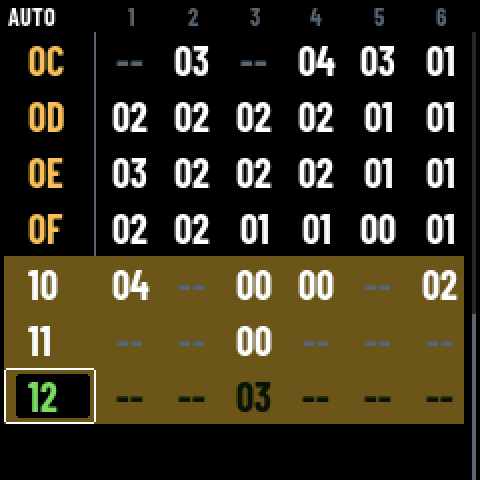
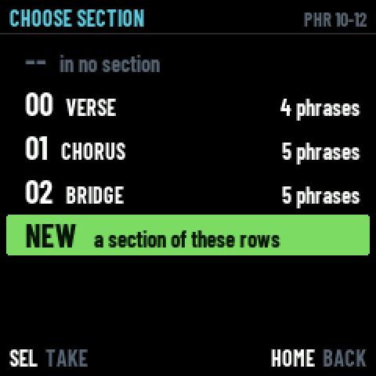
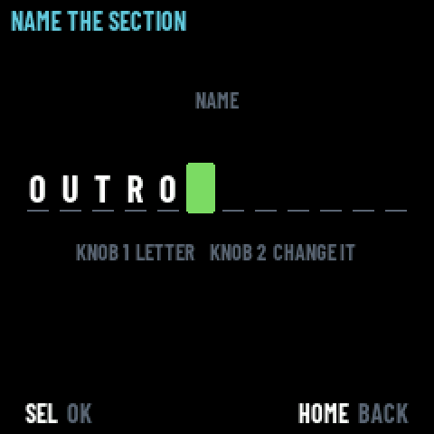
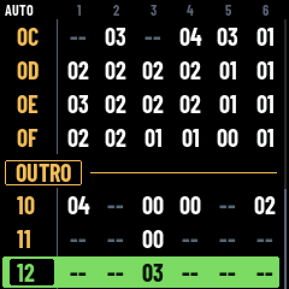
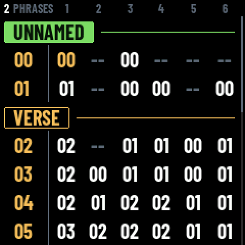
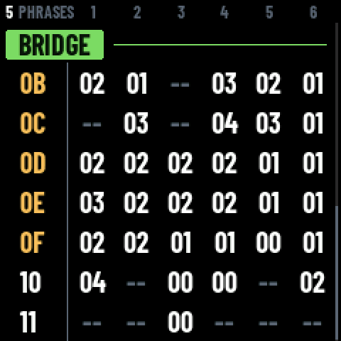
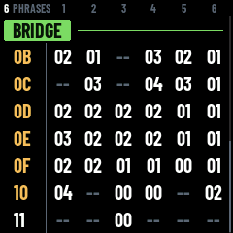
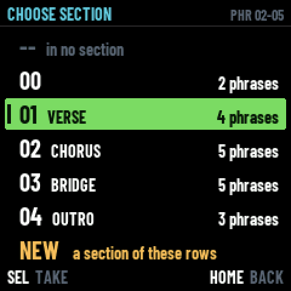

A SECTION is a run of consecutive phrases with a name on it —
VERSE, CHORUS, BRIDGE. The file has carried them from the first day:
sec 01 and name CHORUS,
song_sections_normalize() keeping them whole when rows move,
REF SEC 02 playing one, CHOOSE PHRASE listing them by name. And until
today nothing in app/ ever wrote one: a song composed on the machine
could not have a section at all. Now ENV makes one. Every picture below comes out
of the firmware's own framebuffer.
The screen of one phrase's steps was called SECTION and wrote SEC 07 in its
corner, where 07 was the phrase's number. A reference row writes
REF SEC 02, where 02 is the group's. HELP's SONG page said
“the section” for a phrase and “a whole section” for a group, eight lines
apart. Three letters, two meanings, two adjacent screens.
So SECTION goes to the group, which is what the file calls it and what a musician calls a
verse; and the screen of one phrase's steps becomes PHRASE, the word SONG,
CHOOSE PHRASE, the help and the file already gave that row. Its corner reads
PHR 07 now, which is what CHOOSE PATTERN's header already said. One word,
one thing; no logic moved.
EDIT tapped on a phrase's number already locks the SELECTION onto whole phrases, and the cursor already stretches it over a run — which is exactly the shape of a section. ENV envelops it. The word is his, and it is also the reason PRESETS was not used: PRESETS opens the list of what is under the cursor, and a section is not under the cursor, it is around the selection. ENV is a verb, and CHOOSE SECTION is the one question the verb has to ask. ENV works wherever the cursor stands in the row.


-- is how a row leaves a section. An existing section takes the rows into it.
NEW makes one and the namer opens on the spot, so a section is born named; taking the
section the rows are already in is how it is renamed.

app/namer.c). HOME here leaves the section without a name, which the file allows.
The grid has no width left — six cells of 31 px — so the section takes a row
of its own: a framed tag in amber, the ink of annotations, then a hairline to the right edge. It
is lifted from the two places this screen was settled before,
moondaw/Sources/SongScreen.swift and web/ui/song.css (25/08), down to
the air it breathes: more above than below, a heading sitting closer to what it opens than to
what it leaves. CONDENSED 20's capitals are 15 px tall, which is what centres the name
in its frame.
And the phrases it holds wear their number in the same amber. Membership is an ink, not an indentation — the app's own note of 28/08 says why: indenting a member row would slide its cells out from under the header that names them. It is also what tells you where you are when the marker has scrolled off the top.

One detent more between 01 and 02. The tag goes green — where you are, the palette's one rule — and the three gestures of the machine land on the thing under the cursor. KNOB 4 is how many phrases it holds: the one number a section has, on the knob that means how much. Right swallows the row below, left gives the last one back. It never takes a phrase that belongs somewhere else.


SEL names it — SEL goes one level down everywhere, and under a marker there is a name, as there is on INSTRUMENT's and PROJECT's NAME. EDIT held + OP4 clears it away and leaves its phrases where they are.
LFO is there to ask twice before something is lost. A section dissolved loses nothing: the phrases stay.
LFO on a marker and LFO on the phrase one detent below would wear the same red band and the same two presses, while one removes a phrase and its blocks and the other removes nothing.
His call. The black keys are the commands, OP4 already means “clear what is under”, and LFO goes on meaning one thing on this screen.

core/trk.c): one row pointing elsewhere. It wears no marker, it is not in the
list, and a run stops before it — a group that swallowed one would be taken apart by the
next load.song_sections_normalize() has always done,
and it is left as it is. UNDO holds the whole arrangement and its sections together, so one
ALGO to the left is one turn too many taken back.player_entry() reports a row, and a marker is not one.